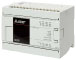
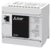
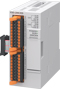
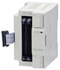
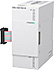

MELSEC iQ-F series High-Speed Counting module

- FX5 CPU module built-in input functions (Built-in high-speed counter function)
- High speed counter
- High-speed pulse input/output module
FX5 CPU module built-in input functions (Built-in high-speed counter function)
| Model | Generic Specifications | Function | |
|---|---|---|---|
 |
FX5U CPU module | Max. 8 ch 200 kHz FX5U-32M: 6 ch 200 kHz + 2 ch 10 kHz |
|
 |
FX5UC CPU module | Max. 8 ch 200 kHz FX5UC-32M: 6 ch 200 kHz + 2 ch 10 kHz |
|
|  | FX5UJ CPU module | Max. 4 ch 100 kHz + 4 ch 10 Hz | |
|  | FX5S CPU module | Max. 4 ch 100 kHz + 4 ch 10 kHz | |
High speed counter
| Model | Number of channels | Input form | Type | Highest response frequency |
Match output | 2-phase counter function |
Compatible CPU module | ||||
|---|---|---|---|---|---|---|---|---|---|---|---|
| FX5U | FX5UC | FX5UJ | FX5S | ||||||||
|  | FX5-2HC/ES | 2 ch | Differential line driver | 1 phase 1 input |
Max. 2 MHz | ○ | - | *1 ○ Up to 15 modules |
*1*2 ○ Up to 13 modules |
*3 ○ Up to 8 modules |
× |
| 1 phase 2 input |
Max. 2 MHz | ||||||||||
| 2 phase 2 input |
1 edge count: Max. 2 MHz 2 edge count: Max. 1 MHz 4 edge count: 500 kHz |
○ | |||||||||
|  | FX3U-2HC | 2 ch | Open collector Differential line driver |
1 phase 1 input |
Max. 200 kHz | ○ | - | *4 ○ Up to 2 modules |
*4 ○ Up to 2 modules |
× | × |
| 1 phase 2 input |
Max. 200 kHz | ||||||||||
| 2 phase 2 input |
1 edge count: Max. 200 kHz 2 edge count: Max. 100 kHz 4 edge count: Max. 50 kHz |
○ | |||||||||
- *1Supported in version 1.300 or later.
- *2When connecting to FX5UC, FX5-CNV-IFC or FX5-C1PS-5V is required.
- *3Supported in version 1.060 or later.
- *4When connecting to FX5U or FX5UC, FX5-CNV-BUS or FX5-CNV-BUSC is required. Select one according to the system configuration.
High-speed pulse input/output module
| Model | Generic Specifications | Function | Compatible CPU module | ||||
|---|---|---|---|---|---|---|---|
| FX5U | FX5UC | FX5UJ | FX5S | ||||
|  | FX5-16ET/ES-H | Max. 2 ch 200 kHz |
|
*1 ○ Up to 4 modules |
*1*2 ○ Up to 4 modules |
*1 ○ Up to 4 modules |
× |
| FX5-16ET/ESS-H | |||||||
- *1Supported in version 1.030 or later.
- *2When connecting to FX5UC, FX5-CNV-IFC or FX5-C1PS-5V is required.